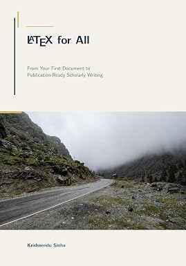
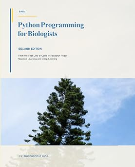
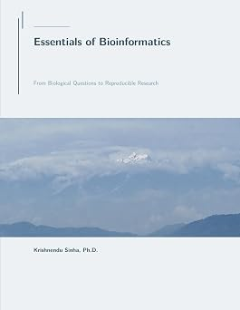

Context-Aware Sequence Alignment
Developing multiple sequence alignment methods that combine protein-language-model representations with learned residue scoring and exact affine-gap dynamic programming.
BABAPPAlign
Computational biology research at Visva-Bharati
We develop and apply computational methods to understand how biological sequences align, evolve, and acquire lineage-specific changes.
Research Identity
The group combines learned residue-level scoring, exact dynamic programming, codon-aware analysis, phylogenetic inference, and evolutionary models. These methods support reproducible studies of molecular adaptation and careful protein-level interpretation.
Research
Our work connects computational method development with biological questions in comparative and molecular evolution.
Developing multiple sequence alignment methods that combine protein-language-model representations with learned residue scoring and exact affine-gap dynamic programming.
BABAPPAlignTesting lineage-specific and site-level evolutionary hypotheses with codon models, multiple-testing control, and robustness-aware interpretation.
Reconstructing evolutionary histories and ancestral sequences to identify when molecular changes arose and how confidently they can be interpreted.
Building transparent workflows for sequence preparation, phylogenetic analysis, selection testing, and structured reporting of sensitivity analyses.
BABAPPASnakePublications
Recent work in sequence alignment, evolutionary inference, and protein adaptation. Complete records are available through scholarly profiles.
Books
Books and teaching resources connected to scholarly writing, bioinformatics education, biological programming, and computational biology.

From Your First Document to Publication-Ready Scholarly Writing
A practical guide for students, researchers, teachers, engineers, and technical professionals preparing scholarly documents, theses, reports, figures, tables, citations, and publication-ready manuscripts in LaTeX.
2026 · Paperback · 264 pages · ISBN-13: 979-8190207026
View on Amazon
An introductory Python programming resource for biology students and researchers, covering programming fundamentals, biological data analysis, visualization, Biopython, machine learning, and reproducible workflows.
2026 · Paperback · 258 pages · ISBN-13: 979-8189773020
View on Amazon
A biology-first introduction to bioinformatics, moving from biological questions to sequence analysis, omics data, structures, networks, predictive models, validation, and reproducible investigation.
2026 · Paperback · 407 pages · ISBN-13: 979-8191899541
View on AmazonPeople
The group is directed by Dr. Krishnendu Sinha in the Department of Zoology, Siksha Bhavana, Visva-Bharati.

Associate Professor of Zoology
Dr. Sinha develops computational methods for biological sequence analysis and applies phylogenetic and codon-based models to questions in molecular evolution. Current work spans context-aware alignment, episodic selection, ancestral reconstruction, and structural interpretation of evolutionary change.
Collaborators
Collaborative work in evolutionary and computational zoology across partner institutions in West Bengal.
Assistant Professor in Zoology
Maulana Azad College
Associate Professor in Zoology
Bidhannagar College
Join
Prospective students interested in computational biology, bioinformatics, molecular evolution, or phylogenetics may email a concise research-interest note and current CV.
Email Ph.D. enquiryProjects may involve sequence alignment, phylogenetic analysis, codon-based evolutionary models, data curation, and reproducible computational workflows.
We welcome collaborations involving molecular evolution, comparative sequence analysis, host-parasite biology, plant proteins, and computational methods.
Contact
Department of Zoology
Siksha Bhavana, Visva-Bharati
Santiniketan 731235, West Bengal, India